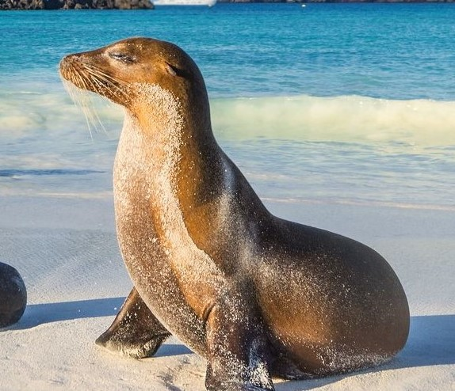
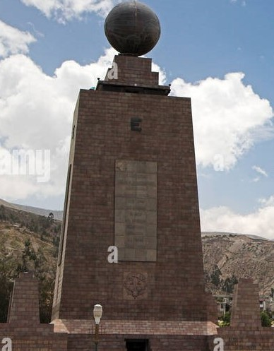
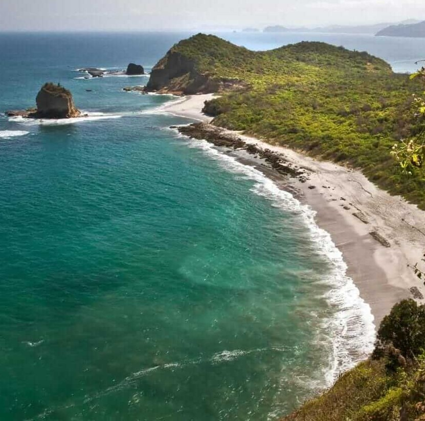

Mi país Ecuador
Ecuador, oficialmente República del Ecuador (en quichua, Ecuadorpi Ripuwlika; en shuar, Ekuatur Nunka), es
un país soberano constituido en un Estado social, democrático, de derecho y plurinacional, cuya forma de
gobierno es la de una república presidencialista, unitaria y descentralizada.

El cual lo separa del archipiélago de Colón o islas Galápagos por aproximadamente mil kilómetros de la costa
continental, entre la península de Santa Elena y la isla San Cristóbal. Limita, así mismo, con Costa Rica
por la frontera marítima de la región insular.La línea equinoccial o paralelo 0°

Es el décimo país más poblado de América, con más de diecisiete millones de habitantes, el más densamente poblado de América del Sur17 y el quinto más
densamente poblado en toda América.
Ecuador tiene una de las más altas concentraciones de ríos por kilómetro cuadrado en el mundo y es uno de
los países de mayor biodiversidad por kilómetro cuadrado.Es el primer país del planeta en tener
los derechos de la naturaleza garantizados en su Constitución del año 2008. Un quinto del territorio
total del país sudamericano se encuentra declarado dentro del Sistema Nacional de Áreas Protegidas del
Ecuador con un total de sesenta y dos reservas protegidas.